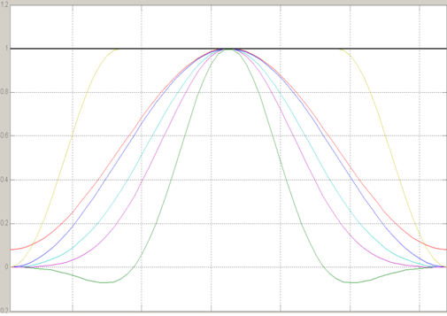
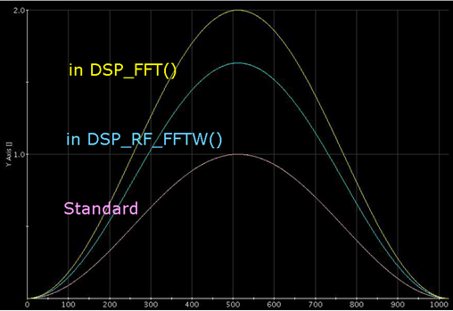
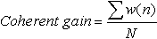
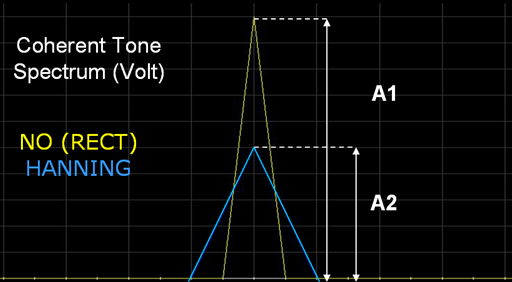
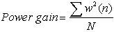
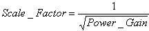

Scaled window in Smartest API
Ge Liang, Verigy
Paper-ID: 125099 January 2011
Introduction
In analog applications, if the captured signal is with non-integral number of cycles, FFT results in a smearing or leakage of energy from your actual frequency to all other frequencies. Applying a window will reduce the size of the discontinuity and reduce spectral leakage. But, windowing will also change the overall amplitude of the signal. To keep the calculated amplitude or power not changed, Smartest API provided "scaled" window, whose amplitude is changed from standard window function. We would like to introduce and discuss the scaled window in this paper.
Scaled Window
The standard window has 1.0 as the biggest value. For example, the standard equation of HANNING window is
w(n)= 0.5-0.5cos( 2πn/N) (1)
According to the equation, the biggest value of standard HANNING is 1.0. It is also true for other windows. Figure 1 shows different windows in MATLAB. We can see that the top of all window function is 1.0.

Figure 1 Window Functions in Matlab
Then let's take a look at the window functions in Smartest. In Figure 2, we showed standard HANNING window and HANNING windows in Smartest API.

Figure 2 HANNING Window in Smartest
The pink one is standard window; the yellow one is from DSP_FFT and blue one is from DSP_RF_FFTW. We can see that the biggest value is 1.0 for standard window, 2.0 for DSP_FFT window and about 1.6 for DSP_RF_FFTW window. It is obvious that the amplitude of the window functions in Smartest is changed, or "scaled", as (2). This scaling is to compensate the amplitude change caused by windowing.
W(n) = Scale_factor * w(n) (2)
The w(n) is standard window while W(n) is scaled window.
We can also see in Figure 2, scale factor is not same. IN Smartest API, they are for 2 types of scaled window, scale for "Coherent Gain" and scale for "Power".
Scale for "Coherent Gain"
The "Coherent Gain" is defined as "normalized DC gain". The equation is

(3)The w(n) is the time domain window function. The N is the point number of window.
To understand the practical meaning, let see Figure 3

Figure 3 Coherent Gain Explanations
Figure 3 shows one coherent tone's spectrum in VOLT. The yellow one is with RECT window while the blue one is with HANNING window. The A1/A2 is the value of Coherent Gain (although actually it is loss). If we enlarge HANNNING window by A2/A1, then the central bin will have same amplitude as no windowing.
So the scale factor will be set to the reciprocal of Coherent Gain. After scaling, windowed coherent signal's the biggest bin will have the same value as non-windowed one.
Table 1 shows the Coherent Gain and corresponding scale factor of each type of window.
|
RECT |
HANNING |
NAMMING |
FLATTOP |
|---|---|---|---|---|
Coherent Gain |
1 |
0.5 |
0.54 |
0.22 |
Scaled Factor |
1 |
2 |
1.852 |
4.5455 |
In Smartest, the DSP_FFT and DSP_SPECTRUM have this type of scaled window.
Scale for "Power"
Another type of scaling is for power loss. Obviously, applying a standard window with 1.0 as top will lower total signal power. Then, to let user get right power result, window can be scaled for power loss. This kind of scaled window will keep the calculated power not changed by windowing.
The equation of Power Gain (actually loss)

(4)The scale factor is equal to the reciprocal value of square root of power gain.

(5)Table 2 shows the Power Gain and corresponding scale factor of each type of window.
|
RECT |
HANNING |
NAMMING |
FLATTOP |
|---|---|---|---|---|
Power Gain |
1 |
0.375 |
0.3966 |
0.1825 |
Scale Factor |
1 |
1.633 |
1.588 |
2.34 |
In Smartest, the DSP_RF_FFTW, DSP_RF_SPECTRUM and DSP_RF_MOD_POWER have this type of scaled window
Scaled Window Benefit
With the scaled window provided by Smartest, some DSP jobs get straightforward. Users Do not need to make the post compensation by themselves. Here are 2 examples.
Example 1
As we know the FLAT_TOP window can keep the biggest bin amplitude same as the tone, no matter coherent or not. Actually, this works only when the window is scaled by Coherent Gain. If user goes with DSP_FFT, it works. Otherwise, without post compensation, user will not get the right amplitude.
Example 2:
With RF application, sometimes we sum up the bins of a WATT spectrum to get the power. This only works that the window is scaled for power. If user apply the DSP_RF_FFTW or DSP_RF_MOD_POWER, the bin-sum power is right. Otherwise, without post compensation, user will not get right power.
Application Consideration
As we discussed, the window functions in Smartest FFT API are scaled. The window in DSP_FFT / DSP_SPECTRUM is scaled for Coherent Gain. The window in DSPRF_FFTW / DSP_RF_SPECTRUM / DSP_RF_MOD_POWER is scaled for power loss. Here we would like to discuss the consideration when applying window in application
When the result is non-relative value, like amplitude or power, user will need to pay attention to the scaling of window when choosing FFT API. For example, if you use the FLAT_TOP to get the tone amplitude, the DSP_FFT is the right choice. If we sum the power bins to get the total power, the DSP_RF_SPECREUM or DSP_RF_MOD_POWER is the right one. For other case, user can pick up right FFT API based on the introduction we have in last chapter.
If user takes the standard window function, to get the right result, he should apply the correction value we provided in this paper to make compensation. For example, user applies the standard HANNING in FFT and sum up the power bins to get the power. The result shall be multiply by 1/0.375.
In other cases with relative value like THD, SNR, ACLR etc, user Do not need to care about the scaling. The scaled factor will be removed in dividing.
Conclusion
In Smartest FFT API, the window function is scaled for compensation. There are 2 types of scaled window in different FFT API. User need to understand and choose the right one for calculation.